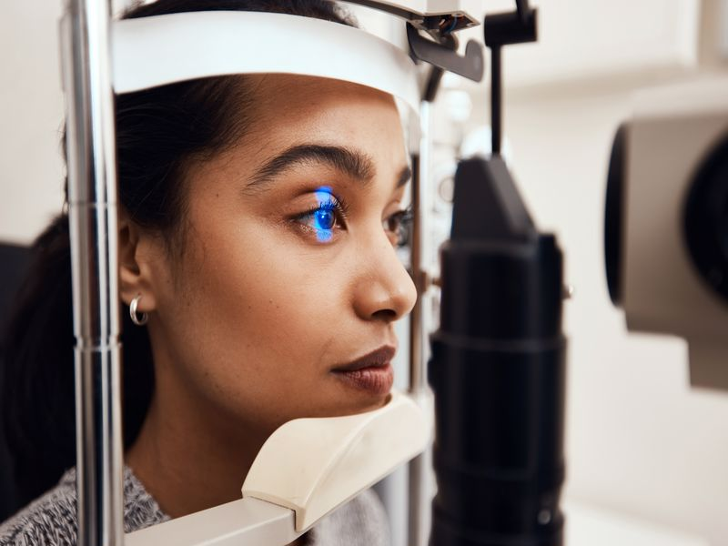
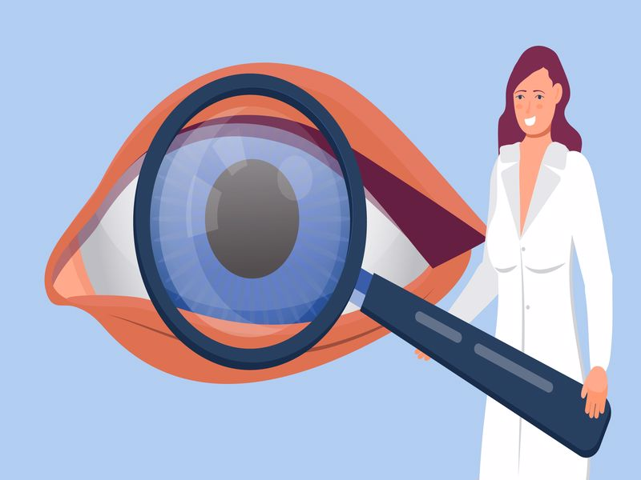

Göz tansiyonu nedir? Glokom ismi ile de bilinmekte olan göz tansiyonu, görme sinirinin hasar alması ile ortaya çıkmaktadır. İlk olarak kişide görme alanı daralmakta ardından geri dönülmeyen bir körlüğe neden olabilmektedir. Dünya geneline bakıldığından katarakt sonrasında körlüğe neden olan en sık neden olarak bilinmektedir. Gözdeki tansiyonu yüksek olan kişilerde glokom görülme ihtimali çok yüksek olduğundan dolayı aynı sorun olarak tanımlanmaktadırlar. Fakat her yüksek göz içi basıncı ise glokoma neden olmamaktadır. Böyle bir durumda oküler tansiyon ismi kullanılmaktadır. Aynı zamanda kişinin göz tansiyonu düşük olmasına rağmen glokom ortaya çıkabilmektedir.
Belirtileri görüldüğü anda mutlaka muayene edilmesi gereken bir durumdur. Kişinin kör olmasına neden olabileceğinden dolayı oldukça tehlikelidir. Muayene ile ortaya çıkarıldığında ise belirti tedavi yöntemlerine başvurulmaktadır.

Göz Tansiyonu Neden Olur?
Göz tansiyonu neden olur? Göz içi basıncın yükselmesinin ardından oküler kan akımının azalması ile ortaya çıkmaktadır. Görme sinirlerinde geri dönüşü olmayan sorunlara yol açabilmektedir. Oldukça sinsi ilerleyen kronik bir durum olduğu bilinmektedir. Eğer glokom tedavi edilemez ise körlükle sonuçlanmaktadır. Hastanın gözünün ön kısmında sürekli olarak göz suyu üretilmekte ve bazı kanallar aracılığı ile boşaltılmaktadır. Boşaltım kanallarında eğer tıkanıklık veya boşaltım oluşur ise göz tansiyonu yükselmektedir. Aynı zamanda bu durum göz sinirlerine de zarar vermektedir.
Genelde göz tansiyonu sabahları yüksek akşamları ise düşük çıkmaktadır. Bundan dolayı tanının konulabilmesi için sabahın ve öğlenin geçmesi gerekmektedir. Bu şekilde bakıldığında doğru bir tanı konulabilmektedir. Tansiyonun artmasına neden olan faktörler arasında ise kortizon ve zayıflama ilaçları yer almaktadır. Polikistik over, guatr hastalığı, gözleri sıkarak ağlama, ağır kaldırma, sıkı kravat bağlama gibi durumlar da tansiyonun artmasına neden olan faktörler arasında yer almaktadır.
Egzersiz yapmak, hamilelik ve sıcak havalar tansiyonun azalmasına neden olabilen etkenler arasında yer almaktadır. Bundan dolayı da bu soruna sahip olan kişilerin egzersiz yapmaları önerilenler arasında yer almaktadır.
Göz Tansiyonu Belirtileri
Göz tansiyonu belirtileri ile birlikte hastalığın olup olmadığı anlaşılabilmektedir. Hemen her yaşta görülebilen bir durumdur. Fakat 40 yaş üzerinde olan kişilerde görülme riski daha fazladır. Bundan dolayı 40 yaş üzerinde yer alan kişilerin mutlaka düzenli olarak kontrole gitmesi gerekmektedir. Genelde belirti vermemektedir fakat en sık görülen belirtiler arasında ise şunlar yer almaktadır:
- Göz ağrısı
- Baş ağrısı
- Puslu görme
- Buğulu görme
- Görme bulanıklığı
- Gözlerde dolgunluk hissi
- Işıkları etrafında haleler görmek
- Kızarıklık
- Bulantı kusma
- Ani görme kaybı
Bu belirtiler ortaya çıktığında kişinin mutlaka muayene edilmesi gerekmektedir. Muayene sonrasında tanı konulur ise buna yönelik belli başlı tedaviler uygulanabilmektedir.
Göz Tansiyonu Tanısı Nasıl Konur?
Göz tansiyonu tanısı nasıl konur? Dikkatli bir göz muayenesi ile birlikte tanı konulmaktadır. Tonometre ismi verilen bir alet ile göz içi basıncı ölçülmektedir. Göz dibi muayenesi yapılmakta ve göz sinirleri incelenmektedir.

Göz Tansiyonu Testi Nasıl Yapılır?
Teşhisin yapılabilmesi için tonometre ismi verilen bir alet ile gözde bulunan basınç ölçülmektedir. Ardından buna uygun göz dibi muayenesi yapılmaktadır. Hasta dikkatli bir şekilde incelendikten sonra teşhis konulmaktadır.
Göz Tansiyonu Tedavi Yöntemleri
Göz tansiyonu tedavi yöntemleri arasında göz damlaları, lazer ve ameliyat bulunmaktadır. Hastaların genelinde göz damlası yeterli olmaktadır. Fakat asıl önemli olan tansiyonun düşmesinin yanında göz sinirlerinde oluşan hasarların da durmasıdır. Bu durum bazı testler ile takip edilmektedir. Duruma uygun olarak da tedavi yöntemleri uygulanmaktadır.